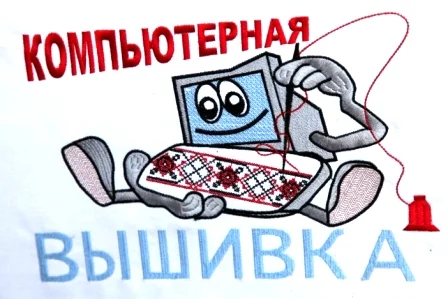

Компьютерная вышивка — это вышивка, выполняемая специальными автоматическими вышивальными машинами, работа которых осуществляется по заданной дизайнером или конструктором программе. По сравнению с ручной вышивкой, которой уже много сотен лет, машинная достаточно молода — первая машинка для вышивания появилась в 1821 году во Франции. На выставке в этой же стране в 1854 году большой ажиотаж вызвала машина Гейльмана, чьё появление стало толчком к развитию вышивальных производств. В современных условиях рисунок вышивки обычно формируется на компьютере, соединенном с вышивальным станком, который согласно командам может наносить единожды сформированный узор на подающуюся ткань. Узоры могут быть обработаны различными редакторами машинной вышивки и сохранены в файлах различных вышивальных форматов, например: FDR (Barudan), ART (Bernina), EMB, DST (Распространённый промышленный формат), PES (Brother), HUS (Husquarna), JEF (Janome), и т. д.
